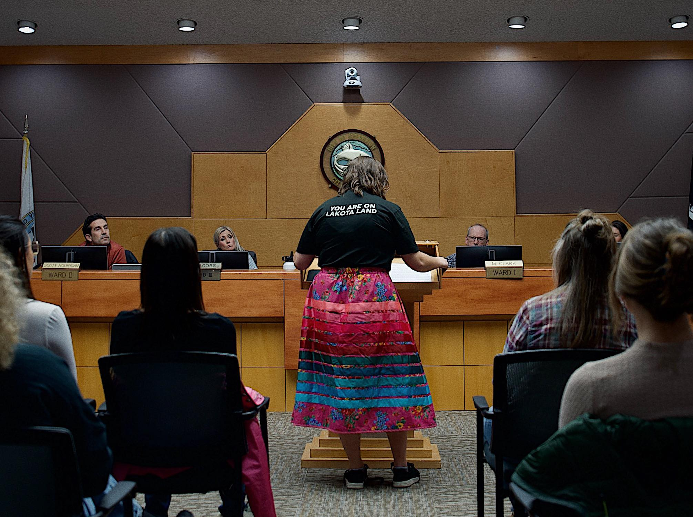

Ward 3 Spearfish City Council Candidate
"I will create an open and transparent conversation between council and community to ensure that the needs of all Spearfish citizens are represented in their government."
Michaela has built strong relationships with a diverse group of people facing various challenges and life circumstances. These connections have given her a deep understanding of how policies impact individuals, helping her consider a wide range of needs in decision-making.
Michaela is an intentional and creative thinker, able to find solutions by looking at all sides of an issue. She is great at leading conversations that help people understand each other and work together toward common goals.
As a Lakota woman, Michaela has a deep connection to the Black Hills, where her ancestors have lived for generations. This love for the land and its people drives her commitment to making a positive impact on her community.
Michaela values government transparency and has led efforts to improve communication and civic engagement. She has facilitated discussions to strengthen relationships between governments and their citizens.
Michaela is an experienced leader with a background in government, community engagement, and advocacy. With degrees in Political Science and Public Policy, she has worked across Tribal, local, state, and federal levels to create meaningful change.
Michaela Madrid is a member of the Lower Brule Sioux Tribe, a single mom, and an expert in government and community work.
Michaela grew up in Pierre, South Dakota, but always loved visiting the Black Hills. As a child, she spent weekends and summers in Spearfish with her aunt and uncle. In 2013, she moved to Spearfish to attend Black Hills State University, where she earned Bachelor of Arts degrees in Political Science and Sociology. Later, she earned a Masters of Public Policy degree from Portland State University with a speciality in intergovernmental relations. She gained experience working with Native nations in the Pacific Northwest but always felt that the Black Hills were home. So, she moved back to Spearfish, had her daughter, and continues to live and work there today.
Michaela’s career has been focused on helping communities and connecting them with resources. In her current job, she works with Tribal governments and leaders, providing training and support. She helps increase civic engagement, improve government transparency, and strengthen relationships between Tribal, local, state, and federal governments. She also facilitates discussions that help communities create action plans for change.
Before this role, Michaela worked as a researcher and a direct service provider for survivors of violence. She was an advocate for families impacted by the Missing and Murdered Indigenous Persons (MMIP) crisis, helping them through the legal process. Her advocacy and research helped shape laws at the state level. Additionally, through her experiences working for universities and the federal government, she learned how to navigate complicated systems.
Michaela has always been a leader, stepping up to serve her community at every stage of her life. From high school to college and graduate school, she held student government roles, gaining firsthand experience in advocacy and decision-making. But leadership isn’t just a title to her—it’s a responsibility. He sapa (the Black Hills) have been home to her Lakota family for generations, and she feels a deep connection to both the land and the people. Now, she’s ready to bring her passion, experience, and dedication to Spearfish City Council, working to create real, positive change for her community.
Polls open . The last day to register to vote in this election is March 24.